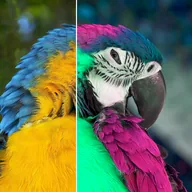

ह्यू और सैचुरेशन

कलर व्हील पर कलरों को घुमाता है और उन्हें तेज़ या हल्का करता है; वाइब्रेंस फीके कलरों को सबसे ज़्यादा तेज़ करता है।
ह्यू कलर व्हील पर हर कलर को घुमाता है (पूरा चक्कर 360 डिग्री का होता है)। सैचुरेशन कलर को तेज़ या कमज़ोर बनाता है: इसे 0 की ओर घटाएँ तो कलर फीका पड़ जाता है, बढ़ाएँ तो ज़्यादा चटक लुक मिलता है। वाइब्रेंस सबसे ज़्यादा फीके कलर को बढ़ाता है, और लाइटनेस तस्वीर को हल्का या गहरा करता है।
इंद्रधनुषी कलर साइकिल के लिए Hue को एनिमेट करें। ब्लैक एंड व्हाइट लुक के लिए, Saturation को 0 तक घटाएँ।
सेटिंग्स
| सेटिंग | प्रकार | रेंज | डिफ़ॉल्ट |
|---|---|---|---|
| ह्यू | एंगल | -360° से 360° | 60° |
| सैचुरेशन | संख्या | 0 से 3 | 1.4 |
| वाइब्रेंस | संख्या | -1 से 1 | 0 |
| लाइटनेस | संख्या | -1 से 1 | 0 |
| स्टाइल | विकल्प | क्लासिक, ब्राइटनेस रखें | क्लासिक |